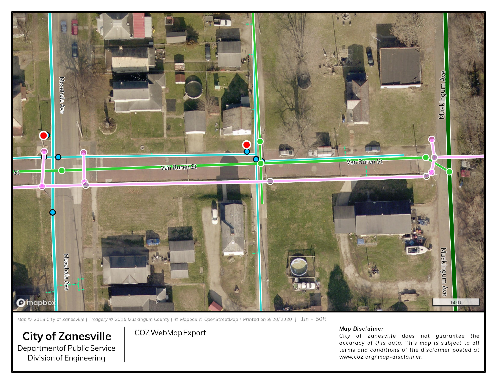

<section data-markdown data-separator="///">
  <textarea data-template>

🔥 🔥 🔥 🔥 🔥
<br />from the ashes<br />of shapefiles<br />
🔥 🔥 🔥 🔥 🔥

///

# Zanesville, OH

///


///

## Demographics

|   |   |
|---|---|
| Population | 25,376 |
| Median Age | 37 |
| Median HH Income | $28,258 |
| Poverty | 29.3% |

///

## Historical Context

- Esri Licensing Since 2000
- Two GIS Users
- City Engineer
- CAD Technician


///

## Legacy Setup
- ArcMap & ArcPad
- Shapefiles & Rasters
- Internal Network Share

///

## 20 Years of Data

- ~300 Shapefiles
- 20GB Vector Data 
- 100s of MXDs
- **100s of .lock Files**

///


///


///


///

❗❗❗❗❗❗
<br>
File Geodatabases
<br>
❗❗❗❗❗❗

///

## FGDB Benefits

- Domains
- Feature Datasets
- Geometric Networks

///

# BUT...

///


///
## FGDB Issues
- Local FGDB Not Backed Up
- S  l  o  w Network
- **rANd0m Data Loss**

///

## Esri Support

> FGDB served over a network share 
is NOT a supported setup
///

## Solution

RDMS Database on Enterprise

///
### 😟 🙍 🥺
### No Esri Enterprise

///

### SQL Server Express 
### ✨ 😺 😃 ✨

///

### Get Glowing Review From SQL Exp User

///

## Repurposed Server
- Windows Server 2012
- 8 Cores, 16GB RAM

///

### Setup SQL Server Express, Permissions & Import Data

///

# Everything was working great...

///


///
## SQL Express Issues
- Slow to Select/Start Editing
- Three Connection Limit
- 4GB Mem Limit
///


///

~~Shapefiles~~

~~FGDB~~

~~SQL Server Express~~

///

### 🧐 Alternatives 🤔

///


///


///

# Overview

///

## Database

PostgreSQL v11 & 

PostGIS v3.0

///

## PostgreSQL v11

Postgres First Released in 1996

View-Only Support in ArcMap & ArcPro

///

# Desktop

///

## QGIS 3.1

Editing & Print Maps

///

## ArcGIS Pro

Editing of AGOL & Print Maps

///

## ArcMap

Viewer for Legacy Users (2)

///

# Web

///

## Database to Web

Postgres -> <br>

NodeJS -> <br>

GeoJSON -> <br>

Vector Tiles

///

## Mapbox GL JS
- Internal Applications
- Public Map Viewer
- **Simple Print Maps**

///



///

## ArcGIS Online

- Water Utility Data
- Collector
- Dashboards
- WebAppBuilder
- Story Maps

///

# Benefits

///

## Postgres/QGIS Benefits

- Database Views
- Geometry Checks
- QGIS Projects stored in DB
- **Open Licensing**
- QGIS Plugins

///

# Issues

///

## Missing Features

- Editor Tracking
- Editing in ArcMap or Pro
- Esri Transformations
- Geometry Fields
- Postgres != ArcGIS Online

///

## Enterprise?

///

## Issues with Upgrading

- Administration Changes 
- Benefits Difficult to Communicate
- COVID-19 & Budget Cuts

///

# Future Direction

///

## Live Web Services

> [pg_featureserv](https://311.coz.org/api/v1/feature-server/collections.html)
> [pg_tileserv](https://311.coz.org/api/v1/vector-tiles/public.adm_mus_parcels.html)

///


///

## Shapfiles

> Still used as the default cross-platform data format.

///

Contact Info

## Malcolm Meyer
### [@getbounds](https://twitter.com/getbounds)

</textarea>
</section>